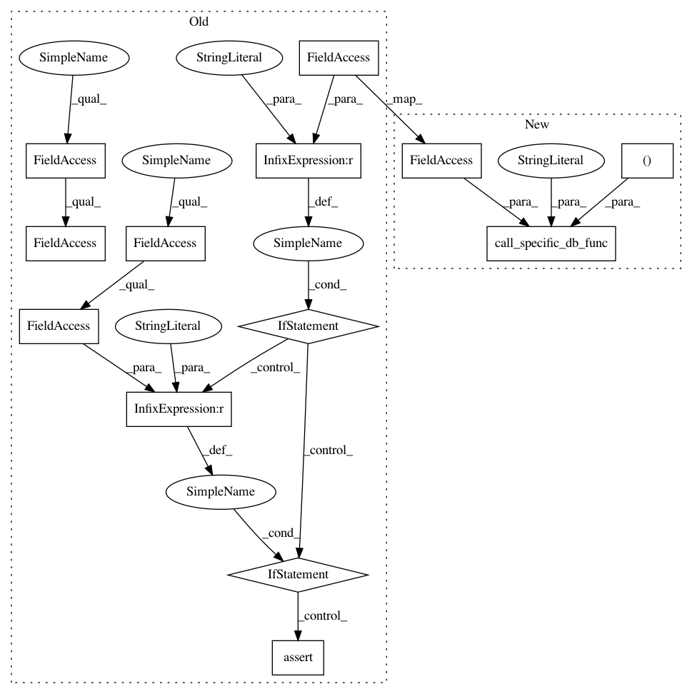

28204a95e521ecb5b8451a82350265ed24e7743f,secuml/exp/data/idents.py,Idents,load,#Idents#,44
Before Change
def load(self):
filepath, _ = self.get_filepath_hash()
if self.secuml_conf.db_type == "mysql":
mysql_specific.load_idents(self.cursor, filepath,
self.dataset_conf.dataset_id)
elif self.secuml_conf.db_type == "postgresql":
postgresql_specific.load_idents(self.cursor, filepath,
self.dataset_conf.dataset_id)
else:
assert(False)
self.secuml_conf.logger.info("Idents file for the dataset %s/%s "
"loaded into the database (%s)."
% (self.dataset_conf.project,
self.dataset_conf.dataset,
After Change
def load(self):
filepath, _ = self.get_filepath_hash()
call_specific_db_func(self.secuml_conf.db_type, "load_idents",
(self.cursor, filepath,
self.dataset_conf.dataset_id))
self.secuml_conf.logger.info("Idents file for the dataset %s/%s "
"loaded into the database (%s)."
% (self.dataset_conf.project,
self.dataset_conf.dataset,
In pattern: SUPERPATTERN
Frequency: 3
Non-data size: 13
Instances
Project Name: ANSSI-FR/SecuML
Commit Name: 28204a95e521ecb5b8451a82350265ed24e7743f
Time: 2019-04-19
Author: anael.bonneton@ssi.gouv.fr
File Name: secuml/exp/data/idents.py
Class Name: Idents
Method Name: load
Project Name: ANSSI-FR/SecuML
Commit Name: 28204a95e521ecb5b8451a82350265ed24e7743f
Time: 2019-04-19
Author: anael.bonneton@ssi.gouv.fr
File Name: secuml/exp/data/ground_truth.py
Class Name: GroundTruth
Method Name: load
Project Name: ANSSI-FR/SecuML
Commit Name: 28204a95e521ecb5b8451a82350265ed24e7743f
Time: 2019-04-19
Author: anael.bonneton@ssi.gouv.fr
File Name: secuml/exp/data/annotations.py
Class Name: Annotations
Method Name: load_partial_annotations